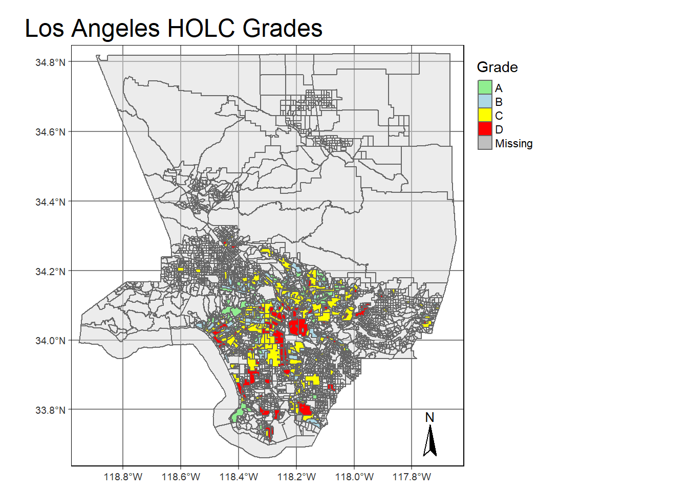
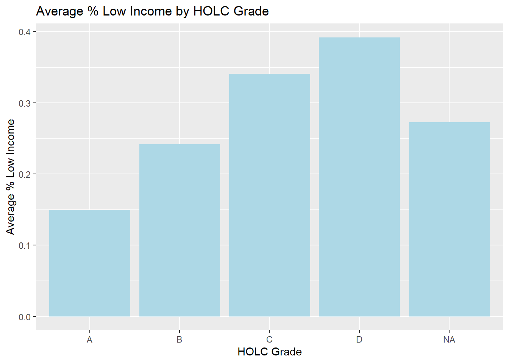
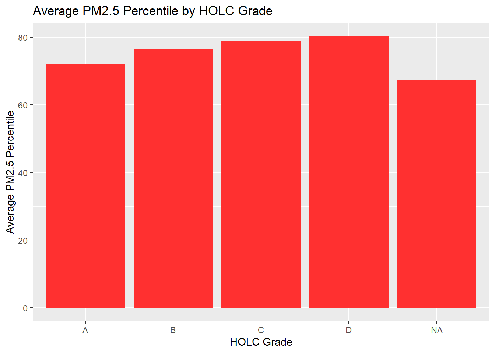
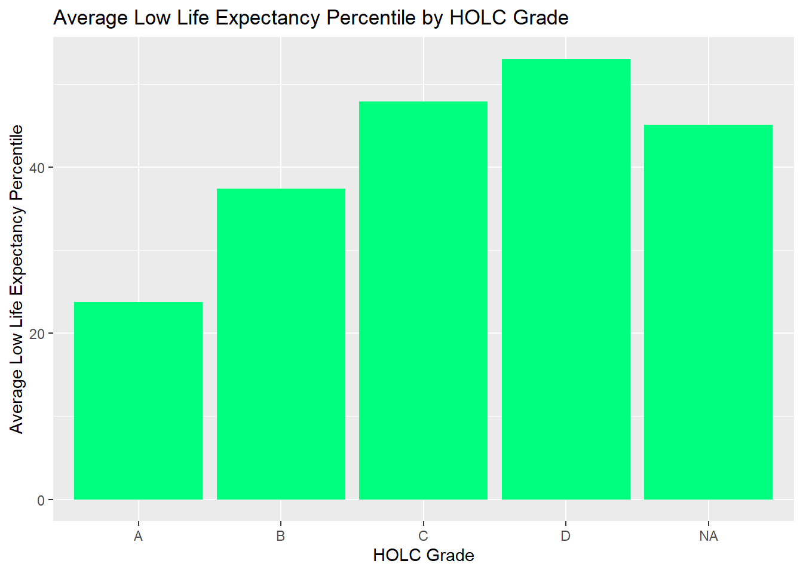
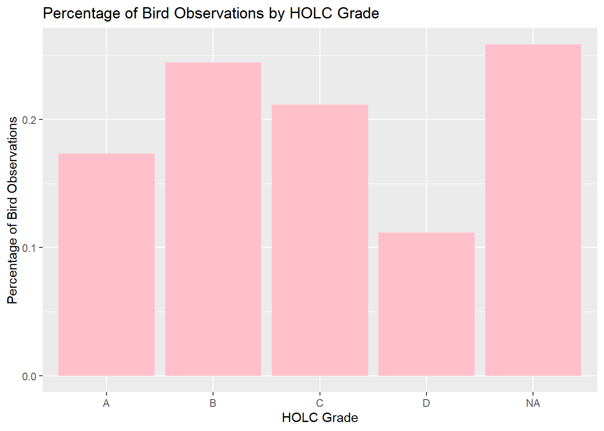

library(here)
library(tmap)
library(sf)
library(dplyr)
library(ggplot2)
library(kableExtra)Redlining Environmental Justice
Exploring patterns of environmental justice
Part 1: Legacy of Redlining in Current Environmental (In)Justice
Load in Packages
Load and Filter Census Data
# read in geodatabase of EJScreen data at the Census Block Group level
ejscreen <- sf::st_read(here::here("data", "ejscreen","EJSCREEN_2023_BG_StatePct_with_AS_CNMI_GU_VI.gdb"), quiet = TRUE)
# filter to a state you are interested in
california <- ejscreen %>%
dplyr::filter(ST_ABBREV == "CA")
# filter to a county you are interested in
la <- ejscreen %>%
dplyr::filter(CNTY_NAME %in% c("Los Angeles County"))
# find the average values for all variables within counties
california_counties <- aggregate(california, by = list(california$CNTY_NAME), FUN = mean)Load and Clean Inequality Data
#read in redlining data
la_inequality <- st_read(here("data", "mapping-inequality", "mapping-inequality-los-angeles.json"), quiet = TRUE)
#convert la county file to an sf using the geometry from the shape column
la_sf <- st_as_sf(la, wkt = "SHAPE")
#check if crs is the same, they are not
if(st_crs(la_inequality) == st_crs(la_sf)) {
print("Coordinate Reference Systems Match!")
} else{
warning("Coordinate Reference Systems DO NOT Match!")
}
#change crs to WGS 84
la_inequality <- st_transform(la_inequality, crs = 3395)
la_sf <- st_transform(la_sf, crs = 3395)
#check again if match, they do
if(st_crs(la_inequality) == st_crs(la_sf)) {
print("Coordinate Reference Systems Match!")
} else{
warning("Coordinate Reference Systems DO NOT Match!")
}[1] "Coordinate Reference Systems Match!"Remove Islands
#getting rid of Catalina and San Clemente Islands data
la_sf_crop <- la_sf %>%
filter(!(ID %in% c("060375991002", "060375991001", "060375990002", "060375990001", "060375990003", "060375990004")))HOLC Grade Map
#make palette for neighborhood grading
grade_palette <- c("A" = "lightgreen",
"B" = "lightblue" ,
"C" = "yellow",
"D" = "red")
#tmap_mode("view")
#tmap_mode("plot")
#fixing geometry so that basemap can be displayed
la_sf_crop <- st_make_valid(la_sf_crop)
la_inequality <- st_make_valid(la_inequality)
#NOTE: must be in interactive mode to see basemap
la_grade_map <- tm_basemap("CartoDB.Positron") +
tm_graticules() +
tm_shape(la_sf_crop) +
tm_polygons(alpha = 0.5) +
tm_shape(la_inequality) +
tm_polygons(col = "grade", palette = grade_palette, title = "Grade") +
tm_layout(legend.outside = TRUE, main.title = "Los Angeles HOLC Grades", title.fontface = "bold") +
tm_compass(position = c("right", "bottom"))
la_grade_map
HOLC Grade Stats
#join epa data with holc data
la_join <- st_join(la_sf_crop, la_inequality, by = "geometry")
#create a summary table that groups blocks by grade, and calculates % of each grade
grade_percentage <- la_join %>%
group_by(grade) %>%
summarize(count = n()) %>%
mutate(percentage = count / sum(count, na.rm = TRUE)) %>%
rename("HOLC Grade" = "grade",
"Count" = "count",
"%" = "percentage")
#new table with kableExtra
grade_percentage %>%
st_drop_geometry(grade_percentage) %>%
kbl(caption = "Percentage of LA Block Groups by HOLC Grade") %>%
kable_classic(full_width = F, html_font = "Cambria")| HOLC Grade | Count | % |
|---|---|---|
| A | 449 | 0.0499889 |
| B | 1239 | 0.1379426 |
| C | 3058 | 0.3404587 |
| D | 1346 | 0.1498553 |
| NA | 2890 | 0.3217546 |
Additional Stats
#create new table for summarizing stats of each grade
#table shows avg low income, avg percentile PM 2.5, and avg percentile life expectancy by each grade
holc_stats <- la_join %>%
group_by(grade) %>%
summarize(
avg_low_inc = mean(LOWINCPCT, na.rm = TRUE),
avg_pm25 = mean(P_PM25, na.rm = TRUE),
avg_life_exp = mean(P_LIFEEXPPCT, na.rm = TRUE)
) %>%
rename("Low Income %" = "avg_low_inc",
"PM2.5 Percentile" = "avg_pm25",
"Low Life Exp. Percentile" = "avg_life_exp",
"HOLC Grade" = "grade")
#kableExtra table
holc_stats %>%
st_drop_geometry(holc_stats) %>%
kbl(caption = "LA Life Satisfaction Stats by HOLC Grade") %>%
kable_classic(full_width = F, html_font = "Cambria")| HOLC Grade | Low Income % | PM2.5 Percentile | Low Life Exp. Percentile |
|---|---|---|---|
| A | 0.1497511 | 72.16036 | 23.75982 |
| B | 0.2420120 | 76.33898 | 37.42025 |
| C | 0.3408981 | 78.81884 | 47.88017 |
| D | 0.3919059 | 80.23700 | 53.03621 |
| NA | 0.2725691 | 67.31244 | 45.07533 |
Stat Summary Figures
#barcharts for stat summaries
low_inc_plot <- ggplot(holc_stats, aes(x = `HOLC Grade`, y = `Low Income %`)) +
geom_bar(stat = "identity", fill = "lightblue") +
labs(title = "Average % Low Income by HOLC Grade",
x = "HOLC Grade",
y = "Average % Low Income")
pm25_plot <- ggplot(holc_stats, aes(x = `HOLC Grade`, y = `PM2.5 Percentile`)) +
geom_bar(stat = "identity", fill = "firebrick1") +
labs(title = "Average PM2.5 Percentile by HOLC Grade",
x = "HOLC Grade",
y = "Average PM2.5 Percentile")
life_exp_plot <- ggplot(holc_stats, aes(x = `HOLC Grade`, y = `Low Life Exp. Percentile`)) +
geom_bar(stat = "identity", fill = "springgreen") +
labs(title = "Average Low Life Expectancy Percentile by HOLC Grade",
x = "HOLC Grade",
y = "Average Low Life Expectancy Percentile")
low_inc_plot
pm25_plot
life_exp_plot
These results clearly show a correlation between HOLC grade with conditions and health of the population. It appears that the lower the grade, which corresponds with the designation of an “unsafe” neighborhood, the worse off people are in those areas. Lower grades see lower income, more air pollution, and lower life expectancies. This is further evidence that redlining is a harmful practice that causes modern day segregation of the rich and healthy separated from the poor and unhealthy.
Part 2: Legacy of redlining in biodiversity observations
Load and Clean Bird Data
#read in bird obs
birds <- st_read(here("data", "gbif-birds-LA", "gbif-birds-LA.shp"), quiet = TRUE)
#check if crs is WGS84, is not
if(st_crs(birds) == st_crs(la_join)) {
print("Coordinate Reference Systems Match!")
} else{
warning("Coordinate Reference Systems DO NOT Match!")
}
#put bird data in WGS84
birds <- st_transform(birds, crs = 3395)
#check again, successfully transformed
if(st_crs(birds) == st_crs(la_join)) {
print("Coordinate Reference Systems Match!")
} else{
warning("Coordinate Reference Systems DO NOT Match!")
}[1] "Coordinate Reference Systems Match!"Join Bird Data to LA
#spatially join LA shape/HOLC with bird data
birds_join <- st_join(la_join, birds, by = "geometry")Create Bird Stats
bird_stats <- birds_join %>%
group_by(grade) %>%
summarize(
total_observations = n(),
percent_observations = n() / nrow(birds_join)
)Bird Stats Plot
bird_stats_plot <- ggplot(bird_stats, aes(x = grade, y = percent_observations)) +
geom_bar(stat = "identity", fill = "pink") +
labs(title = "Percentage of Bird Observations by HOLC Grade",
x = "HOLC Grade",
y = "Percentage of Bird Observations")
bird_stats_plot
It appears that my data does support the findings of Ellis-Soto et al. 2023. They found that bird sampling tends to be lower in redlined neighborhoods, which is what my figure also shows. The percentage of bird observations based on HOLC grade follow a bell shaped curve, with grade A neighborhoods having less observations, grade B and C neighborhoods having more observations, and grade D neighborhoods having the lowest amount of observations.
Sources
Environmental Justice Screening Data | United States Environmental Protection Agency. 2023. EJScreen: Environmental Justice Screening and Mapping Tool – 2023 Census Block Group Data. | https://www.epa.gov/ejscreen/download-ejscreen-data |
HOLC Grade Designations | Digital Scholarship Lab, University of Richmond. 2024. Mapping Inequality: Redlining in New Deal America – HOLC Maps for Los Angeles. | https://dsl.richmond.edu/panorama/redlining/data |
Biodiversity Observations | Global Biodiversity Information Facility (GBIF). 2024. Bird Observations in Los Angeles from 2021 Onward. | https://eds-223-geospatial.github.io/assignments/gbif.org |
Ellis-Soto, D., Chapman, M., & Locke, D. H. (2023). Historical redlining is associated with increasing geographical disparities in bird biodiversity sampling in the United States. Nature Human Behaviour, 1-9.